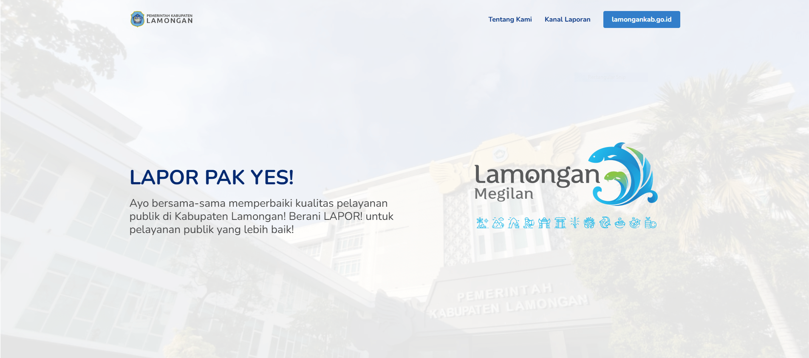

Lapor Pak Yes!
Sejak tahun 2017, Pemerintah Kabupaten Lamongan telah menjadi bagian dari Sistem Pengelolaan Pengaduan Pelayanan Publik Nasional (SP4N) - Layanan Aspirasi dan Pengaduan Online Rakyat (LAPOR!). Melalui platform ini, warga Kabupaten Lamongan dapat mengajukan aduan, permintaan informasi, dan aspirasi terkait layanan publik yang diselenggarakan oleh Pemerintah Kabupaten Lamongan. Saluran pengaduan yang tersedia meliputi situs web www.lapor.go.id, SMS ke 1708, akun Twitter @lapor1708, serta aplikasi mobile yang tersedia di platform Android dan iOS.
Mengikuti perkembangan Teknologi Informasi dan Komunikasi (TIK), khususnya dalam bidang media komunikasi, Pemerintah Kabupaten Lamongan, melalui Dinas Komunikasi dan Informatika, telah mengembangkan inovasi berupa platform "Lapor Pak YES!". Platform ini, yang telah aktif sejak Maret 2021, memberikan saluran tambahan bagi masyarakat Kabupaten Lamongan untuk menyampaikan aduan, permintaan informasi, dan aspirasi. Saluran tambahan ini meliputi WhatsApp (0811 3021 708), Instagram (@laporlamongan), Telegram (@laporlamongan), dan Facebook (@laporlamongan).
https://laporpakyes.lamongankab.go.id/